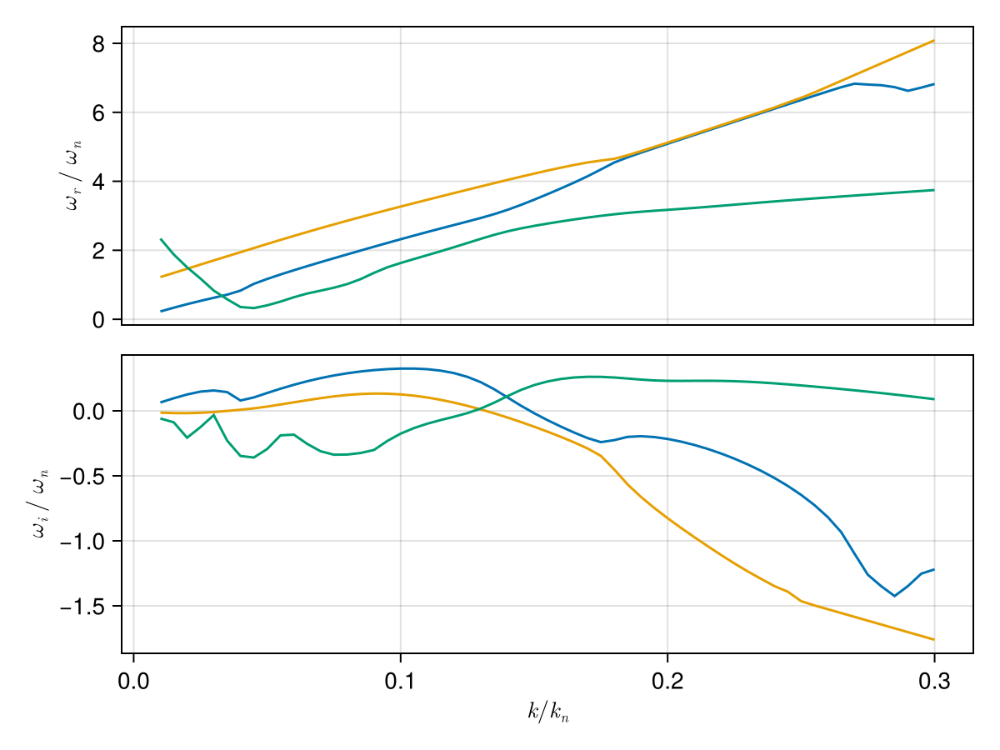

Case: Ring beam instability
This page demonstrates how to use the package to solve kinetic dispersion relations for the ring beam instability Umeda et al. [7].
using PlasmaBO
using PlasmaBO: q, me
using Unitful
# Umeda 2012 ring beam configuration
B0 = 96.24e-9 # [Tesla]
T = 51u"eV"
# Ring beam electrons (10% density)
# The first argument (optional) indicates particle type of the distribution (by default we use `proton`)
ring_beam = Maxwellian(:e, 1e5, T; vdz=0.1, vdr=0.05)
# Background electrons (90% density)
background = Maxwellian(:e, 9e5, T)
species = [ring_beam, background]
# Compute normalization
wce = abs(B0 * q / me)
lambdaD = Debye_length(species)
kn = 1 / lambdaD
# Wave vector: k*λD = 0.03, θ = 40°
k = 0.03 / lambdaD
θ = deg2rad(40)
kx = k * sin(θ)
kz = k * cos(θ)
# J=12 provides good accuracy (J-pole approximation order)
ωs = solve_kinetic_dispersion(species, B0, kx, kz; N=6, J=12)
# Filter for unstable modes (ω/ωce) with positive growth rate
ω_unstable = filter(ω -> isfinite(ω) && imag(ω) > 0.001*wce, ωs)[1] ./wce0.6229290799953453 + 0.15687749193741884imDispersion Curve Scan
Scan k*λD from 0.01 to 0.3
julia> k_ranges = (0.01:0.005:0.3) .* kn;julia> sol = solve_kinetic_dispersion(species, B0, k_ranges, θ; N=6)Solving dispersion... 3%|█ | ETA: 0:00:24 Solving dispersion... 25%|███████▋ | ETA: 0:00:18 Solving dispersion... 47%|██████████████▎ | ETA: 0:00:13 Solving dispersion... 69%|████████████████████▉ | ETA: 0:00:07 Solving dispersion... 92%|███████████████████████████▌ | ETA: 0:00:02 Solving dispersion... 100%|██████████████████████████████| Time: 0:00:23 PlasmaBO.DispersionSolution{StepRangeLen{Float64, Base.TwicePrecision{Float64}, Base.TwicePrecision{Float64}, Int64}, Nothing, Vector{Vector{ComplexF64}}}(0.00018836306290145928:9.418153145072964e-5:0.005650891887043779, nothing, Vector{ComplexF64}[[-102928.9054814902 - 993.7228679644902im, -102928.90548148978 - 993.7228679644904im, -102928.90548148974 - 993.7228679644868im, -102456.80666095433 - 1093.7583776455494im, -102456.80666095429 - 1093.7583776455685im, -102456.8066609541 - 1093.7583776455035im, -102074.2277380771 - 1156.3266317087334im, -102074.22773807663 - 1156.3266317087403im, -102074.2277380759 - 1156.3266317086907im, -101728.72370943728 - 1186.7577946133406im … 106054.56332172497 - 1186.7577946132365im, 106400.0673503645 - 1156.326631708699im, 106400.06735036467 - 1156.326631708655im, 106400.06735036508 - 1156.3266317086884im, 106782.6462732423 - 1093.7583776455456im, 106782.64627324301 - 1093.758377645554im, 106782.6462732436 - 1093.7583776455413im, 107254.74509377874 - 993.7228679644766im, 107254.74509377887 - 993.7228679644829im, 107254.74509377939 - 993.7228679644683im], [-104132.24870668541 - 4.5108352936240863e-7im, -103612.7068712227 - 1490.5843019467345im, -103612.70687122193 - 1490.5843019466954im, -103612.70687122172 - 1490.584301946753im, -102904.55864041817 - 1640.6375664682998im, -102904.55864041793 - 1640.637566468371im, -102904.55864041779 - 1640.637566468323im, -102330.69025610089 - 1734.4899475630486im, -102330.69025610038 - 1734.4899475630239im, -102330.69025610008 - 1734.4899475629766im … 108301.1936315748 - 1780.1366919116404im, 108819.44967453014 - 1734.4899475647146im, 108819.44967453313 - 1734.4899475629927im, 108819.44967453326 - 1734.489947562979im, 109393.3180588507 - 1640.637566468381im, 109393.3180588507 - 1640.6375664683324im, 109393.31805885081 - 1640.6375664687118im, 110101.46628965435 - 1490.5843019467825im, 110101.46628965459 - 1490.5843019467288im, 110101.4662896553 - 1490.5843019467288im], [-127734.19833714694 - 6.181725664264616e-7im, -125108.42132139797 - 8.628407601684709e-7im, -104296.50826095376 - 1987.4457359289881im, -104296.50826095347 - 1987.4457359289408im, -104296.50826095302 - 1987.4457359289288im, -103352.3106198814 - 2187.5167552911253im, -103352.31061988116 - 2187.5167552911516im, -103352.3106198806 - 2187.5167552910643im, -102587.15277412624 - 2312.6532634174073im, -102587.15277412497 - 2312.653263417401im … 111238.83199870256 - 2312.6532634173864im, 111238.83199871553 - 2312.653263418261im, 112003.98984445611 - 2187.516755288533im, 112003.98984445771 - 2187.5167552910934im, 112003.98984445914 - 2187.5167552911353im, 112948.18748552942 - 1987.4457359290595im, 112948.18748552966 - 1987.445735929034im, 112948.18748552987 - 1987.445735928951im, 125110.57560562248 - 9.653878346902897e-7im, 127742.06780007668 - 6.832603247630686e-7im], [-153033.4517071197 - 6.651970147661925e-7im, -151230.37236472935 - 8.143116240308063e-7im, -104980.30965068543 - 2484.307169911226im, -104980.30965068525 - 2484.3071699112165im, -104980.30965068433 - 2484.3071699112297im, -103800.06259934488 - 2734.395944113919im, -103800.06259934459 - 2734.395944113904im, -103800.06259934441 - 2734.3959441139145im, -102843.61529214951 - 2890.8165792717436im, -102843.61529214897 - 2890.816579271664im … 113658.21432287141 - 2890.8165792716945im, 113658.21432290714 - 2890.8165792726636im, 114614.66163006185 - 2734.395944107554im, 114614.66163006537 - 2734.395944113923im, 114614.66163006576 - 2734.395944113917im, 115794.90868140517 - 2484.3071699114953im, 115794.90868140564 - 2484.307169911181im, 115794.90868140593 - 2484.3071699112224im, 151230.7619521488 - 9.122423128005153e-7im, 153039.23919243694 - 7.39243432690273e-7im], [-179272.2610552495 - 6.545369462860283e-7im, -177968.88453581437 - 7.489455749426827e-7im, -105664.11104041668 - 2981.168603893435im, -105664.11104041601 - 2981.1686038934313im, -105664.1110404155 - 2981.16860389344im, -104247.8145788085 - 3281.275132936686im, -104247.81457880796 - 3281.275132936701im, -104247.81457880743 - 3281.275132936672im, -103100.07781017332 - 3468.9798951260427im, -103100.07781017305 - 3468.9798951261205im … 116077.59664704006 - 3468.979895126073im, 116077.5966471082 - 3468.979895130919im, 117225.3334156669 - 3281.2751329242565im, 117225.33341567365 - 3281.2751329367065im, 117225.33341567384 - 3281.275132936696im, 118641.6298772813 - 2981.1686038932676im, 118641.62987728148 - 2981.168603894223im, 118641.6298772818 - 2981.16860389347im, 177968.732468416 - 8.38437596240027e-7im, 179276.61666528555 - 7.290029486739513e-7im], [-206072.2971070505 - 6.20793721244257e-7im, -205090.62072052385 - 6.839277957622716e-7im, -106347.91243014764 - 3478.0300378757347im, -106347.91243014722 - 3478.0300378756856im, -106347.91243014712 - 3478.0300378756456im, -104695.56655827149 - 3828.1543217594485im, -104695.56655827144 - 3828.154321759459im, -104695.56655827118 - 3828.15432175943im, -103356.54032819788 - 4047.14321098039im, -103356.54032819784 - 4047.143210980402im … 118496.97897120725 - 4047.1432109792845im, 118496.97897120756 - 4047.1432109804027im, 119836.00520128052 - 3828.1543217594735im, 119836.00520128147 - 3828.1543217586236im, 119836.00520128336 - 3828.1543217574717im, 121488.35107315592 - 3478.0300378742686im, 121488.35107315701 - 3478.0300378757056im, 121488.35107315797 - 3478.0300378771317im, 205090.3163481704 - 7.649049802438412e-7im, 206075.6701142394 - 6.920733994775219e-7im], [-233230.16633337838 - 5.806643974744958e-7im, -232466.13913366193 - 6.240143465818759e-7im, -107031.71381987914 - 3974.8914718579404im, -107031.71381987866 - 3974.891471857943im, -107031.71381987861 - 3974.8914718579117im, -105143.31853773473 - 4375.033510582236im, -105143.31853773445 - 4375.033510582267im, -105143.31853773363 - 4375.033510582316im, -103613.00284622314 - 4625.306526834785im, -103613.00284622231 - 4625.306526834734im … 120916.36129537626 - 4625.306526834682im, 120916.36129537654 - 4625.306526834792im, 122446.67698688828 - 4375.033510581954im, 122446.67698688844 - 4375.033510582221im, 122446.67698697085 - 4375.033510687305im, 124335.0722690312 - 3974.8914718579913im, 124335.07226903229 - 3974.8914718578926im, 124335.07226903472 - 3974.8914718521846im, 232465.81629940416 - 6.98160338430398e-7im, 233232.85045491264 - 6.477338274635258e-7im], [-260628.6655938517 - 5.399799796393782e-7im, -260018.08403374825 - 5.71225158950156e-7im, -107715.51520961025 - 4471.75290584016im, -107715.5152096096 - 4471.752905840117im, -107715.51520960934 - 4471.75290584014im, -105591.07051719869 - 4921.912699405427im, -105591.07051719801 - 4921.9126994050575im, -105591.07051719778 - 4921.91269940507im, -103869.46536424606 - 5203.469842689106im, -103869.46536424587 - 5203.469842689022im … 123335.74361954407 - 5203.4698426891355im, 123335.74361954599 - 5203.46984268915im, 125057.34877249558 - 4921.912699404585im, 125057.34877249633 - 4921.912699405031im, 125057.34877289797 - 4921.912699980459im, 127181.79346490755 - 4471.752905840147im, 127181.79346490819 - 4471.752905840163im, 127181.79346492307 - 4471.752905811204im, 260017.7884916006 - 6.392369016339217e-7im, 260630.85336877668 - 6.033042154740542e-7im], [-288196.12930854515 - 5.025457879663114e-7im, -287697.48574867874 - 5.257392474865726e-7im, -108399.31659934194 - 4968.61433982235im, -108399.31659934172 - 4968.6143398224im, -108399.31659934086 - 4968.614339822344im, -106038.82249666237 - 5468.791888229146im, -106038.82249666183 - 5468.79188822785im, -106038.82249666173 - 5468.791888227829im, -104125.92788227151 - 5781.633158543448im, -104125.92788227084 - 5781.633158543372im … 125755.1259437126 - 5781.633158543459im, 125755.12594371656 - 5781.6331585435255im, 127668.0205581033 - 5468.791888227171im, 127668.02055810417 - 5468.7918882278345im, 127668.02055949357 - 5468.791890333854im, 130028.51466078353 - 4968.61433982235im, 130028.51466078375 - 4968.61433982243im, 130028.51466083738 - 4968.6143397177075im, 287697.23074369435 - 5.877072979387776e-7im, 288197.94965255517 - 5.612591849057935e-7im], [-315886.50820316694 - 4.679441915176153e-7im, -315471.88349516003 - 4.852930475512217e-7im, -109083.11798907325 - 5465.475773804668im, -109083.11798907263 - 5465.475773804656im, -109083.11798907263 - 5465.475773804424im, -106486.57447612801 - 6015.671077054347im, -106486.57447612502 - 6015.671077050585im, -106486.57447612389 - 6015.671077050596im, -104382.39040029464 - 6359.796474397717im, -104382.39040029453 - 6359.796474397734im … 128174.50826788107 - 6359.796474397853im, 128174.50826788743 - 6359.796474395848im, 130278.69234370951 - 6015.671077049774im, 130278.69234371123 - 6015.671077050626im, 130278.69234770791 - 6015.671083360968im, 132875.23585665843 - 5465.475773804644im, 132875.2358566585 - 5465.475773804685im, 132875.23585682455 - 5465.475773494996im, 315471.67002085317 - 5.424832494327347e-7im, 315888.04971377365 - 5.229194357525557e-7im] … [-1.4410954922265946e6 - 1.1410520528443158e-7im, -1.4410756757094758e6 - 1.1044312486774288e-7im, -136435.1741501198 - 25339.93201779905im, -136435.17357832572 - 25339.933133094182im, -136435.17357832298 - 25339.93313309815im, -124396.66874599214 - 27890.860606323076im, -124396.65365465924 - 27890.838629961978im, -124396.6536546127 - 27890.838629876776im, -119508.31050843466 - 25339.891366195243im, -119508.28979465483 - 25339.93313309415im … 229817.1999080101 - 25339.933133094113im, 229825.9812353228 - 25330.79220730298im, 234705.5636481769 - 27890.837902639618im, 234705.56376801367 - 27890.838629961854im, 234711.68216061316 - 27917.985397043758im, 246744.08366475612 - 25339.93316033984im, 246744.08369168162 - 25339.933133094153im, 246745.05758176305 - 25338.87373332397im, 1.441075737836332e6 - 1.2337073086732264e-7im, 1.4410956459778012e6 - 1.2886607692053076e-7im], [-1.469308753278094e6 - 1.1232987162657082e-7im, -1.4692896953588813e6 - 1.08858557723579e-7im, -137118.97566038967 - 25836.793224947265im, -137118.9749680565 - 25836.794567076147im, -137118.97496805422 - 25836.794567081422im, -124844.42371516356 - 28437.744315406457im, -124844.40563412126 - 28437.717818784735im, -124844.40563406344 - 28437.717818677396im, -120192.11532532483 - 25836.74625719123im, -120192.09118438546 - 25836.794567076522im … 232663.92110388674 - 25836.794567076475im, 232673.8403848155 - 25826.507479614782im, 237316.23541006583 - 28437.71692152665im, 237316.23555362117 - 28437.71781878452im, 237323.29117960198 - 28469.665776018493im, 249590.80485424207 - 25836.79460058236im, 249590.8048875583 - 25836.794567076344im, 249591.95599871044 - 25835.551420450825im, 1.4692897600589145e6 - 1.2149632833309554e-7im, 1.4693089061717954e6 - 1.2677924132731277e-7im], [-1.4975228317369157e6 - 1.1022711987607181e-7im, -1.4975044906755562e6 - 1.0678149919840507e-7im, -137802.77719274285 - 26333.654392294946im, -137802.77635778714 - 26333.65600105848im, -137802.77635778414 - 26333.656001065046im, -125292.1791912938 - 28984.628828818313im, -125292.15761358508 - 28984.597007607565im, -125292.15761351225 - 28984.59700747338im, -120875.9206186909 - 26333.600299002857im, -120875.89257411646 - 26333.656001058574im … 235510.64229976104 - 26333.656001058403im, 235521.7976225145 - 26322.12521670917im, 239926.90716820335 - 28984.59590645546im, 239926.90733922995 - 28984.597007607397im, 239935.01045652866 - 29022.017398450444im, 252437.52604242667 - 26333.656042051287im, 252437.5260834339 - 26333.656001058516im, 252438.88024317817 - 26332.203953505876im, 1.4975045583573708e6 - 1.190829017937503e-7im, 1.497522984381058e6 - 1.2487453204812482e-7im], [-1.5257376811166932e6 - 1.0833537089638412e-7im, -1.5257200183079722e6 - 1.047446858137846e-7im, -138486.578750615 - 26830.515513963503im, -138486.57774751945 - 26830.517435040907im, -138486.57774751433 - 26830.51743504865im, -125739.93524583077 - 29531.514267517054im, -125739.9095930477 - 29531.476196430005im, -125739.90959295949 - 29531.47619626363im, -121559.7264420483 - 26830.45340460039im, -121559.69396384784 - 26830.517435040885im … 238357.36349563758 - 26830.517435040823im, 238369.85454167167 - 26817.643150000964im, 242537.57892216858 - 29531.47485184081im, 242537.5791248383 - 29531.476196430158im, 242546.8490274987 - 29575.104781143567im, 255284.24722909514 - 26830.51748494399im, 255284.24727930853 - 26830.51743504095im, 255285.83301668888 - 26828.82895554515im, 1.5257200894319974e6 - 1.16467681233242e-7im, 1.5257378341592427e6 - 1.2219697964610532e-7im], [-1.5539532582762018e6 - 1.0669100447557867e-7im, -1.5539362379726663e6 - 1.0298185770807322e-7im, -139170.38033788893 - 27327.376583373476im, -139170.37913725036 - 27327.378869022985im, -139170.37913724376 - 27327.378869032604im, -126187.69195818718 - 30078.40076726678im, -126187.6615725117 - 30078.35538525316im, -126187.6615724021 - 30078.3553850467im, -122243.53285338581 - 27327.30548063403im, -122243.49535357831 - 27327.37886902303im … 241204.08469151217 - 27327.378869023043im, 241218.01179116702 - 27313.05991177022im, 245148.25067152656 - 30078.35375139513im, 245148.2509104456 - 30078.355385252904im, 245158.81637432656 - 30128.994352088364im, 258130.9684139987 - 27327.378929481358im, 258130.96847518263 - 27327.37886902306im, 258132.8171532184 - 27325.423970129952im, 1.5539363130543919e6 - 1.1431814168493155e-7im, 1.5539534124094897e6 - 1.1994711712759454e-7im], [-1.5821695231192852e6 - 1.0462463251315057e-7im, -1.5821531121831867e6 - 1.0111762094311416e-7im, -139854.18195893132 - 27824.237593180995im, -139854.18052698093 - 27824.240303005005im, -139854.1805269754 - 27824.240303017166im, -126635.4494163468 - 30625.288480007504im, -126635.41355197506 - 30625.234574075785im, -126635.41355184244 - 30625.23457382168im, -122927.33991541147 - 27824.156427164125im, -122927.2967433108 - 27824.24030300531im … 244050.80588738868 - 27824.240303005292im, 244066.26900849742 - 27808.37524156619im, 247758.92241583168 - 30625.232598076007im, 247758.92269605323 - 30625.234574075763im, 247770.92240385045 - 30683.753858388867im, 260977.68959685904 - 27824.240375908677im, 260977.68967105958 - 27824.24030300518im, 260979.83560649093 - 27821.986477278653im, 1.5821531917964637e6 - 1.1229893052576087e-7im, 1.5821696790840207e6 - 1.18328102871601e-7im], [-1.610386438327308e6 - 1.0288567864336073e-7im, -1.6103706060078577e6 - 9.934501576935872e-8im, -140537.9836186325 - 28321.098535210796im, -140537.98191671364 - 28321.101736987337im, -140537.9819167046 - 28321.101737002im, -127083.20771753322 - 31172.17757530823im, -127083.16553143815 - 31172.113762898665im, -127083.16553127598 - 31172.11376258635im, -123611.14769578034 - 28321.0061374329im, -123611.09813304232 - 28321.10173698784im … 246897.52708326277 - 28321.101736987173im, 246914.62480186348 - 28303.590217805417im, 250369.59415462476 - 31172.111384031767im, 250369.59448165898 - 31172.11376289863im, 250383.1773852952 - 31239.451681150986im, 263824.41077736614 - 28321.1018245006im, 263824.41086693644 - 28321.10173698797im, 263826.8914345727 - 28318.51391170145im, 1.6103706907882912e6 - 1.0987074626088358e-7im, 1.6103865969161352e6 - 1.160418605650193e-7im], [-1.6386039691202787e6 - 1.0116855264641345e-7im, -1.638588686852969e6 - 9.74646354734432e-8im, -141221.78532247117 - 28817.959400389722im, -141221.78330644552 - 28817.963170969848im, -141221.78330643306 - 28817.96317098745im, -127530.96696886397 - 31719.068241895304im, -127530.91751090123 - 31718.992951721226im, -127530.91751070588 - 31718.992951339806im, -124294.95626731914 - 28817.854497651217im, -124294.89952277274 - 28817.96317096975im … 249744.24827913963 - 28817.963170969833im, 249763.07680332652 - 28798.70750422428im, 252980.26588744333 - 31718.99010055068im, 252980.2662672682 - 31718.992951721284im, 252995.59182466063 - 31796.156069517707im, 266671.13195517915 - 28817.963275558617im, 266671.13206281274 - 28817.963170969968im, 266673.98778178776 - 28815.003683254356im, 1.6385887775014492e6 - 1.0784271679299944e-7im, 1.638604131180755e6 - 1.1430245194787858e-7im], [-1.6668220830433473e6 - 9.887298801913857e-8im, -1.6668073242683746e6 - 9.540735845803283e-8im, -141905.58707655 - 29314.820178671398im, -141905.58469617605 - 29314.824604952184im, -141905.5846961633 - 29314.824604973495im, -127978.72728805167 - 32265.96068926252im, -127978.66949036525 - 32265.872140544307im, -127978.66949012781 - 32265.872140079064im, -124978.76570825951 - 29314.70138679501im, -124978.70091250398 - 29314.824604951937im … 252590.9694750145 - 29314.82460495227im, 252611.62181557846 - 29293.731589988896im, 255590.9376138299 - 32265.8687380075im, 255590.9380528743 - 32265.8721405438im, 255608.1762539038 - 32353.934318217354im, 269517.8531299085 - 29314.824729415934im, 269517.85325868614 - 29314.824604952126im, 269521.1278579378 - 29311.453199493844im, 1.6668074215548062e6 - 1.0561244599260194e-7im, 1.6668222494802347e6 - 1.1208476280444302e-7im], [-1.69504074977577e6 - 9.770155884325504e-8im, -1.6950264897729377e6 - 9.429049896425568e-8im, -142589.38888766442 - 29811.6808589622im, -142589.38608590802 - 29811.68603893448im, -142589.3860858912 - 29811.68603896025im, -128426.48880410435 - 32812.855149362695im, -128426.42146982886 - 32812.75132936702im, -128426.42146954127 - 32812.75132880263im, -125662.57610244579 - 29811.546676411035im, -125662.5023022346 - 29811.686038933996im … 255437.69067088878 - 29811.686038934036im, 255460.25607042707 - 29788.66898837329im, 258201.60933334392 - 32812.74728582041im, 258201.60983848313 - 32812.75132936666im, 258220.94091671085 - 32912.85192823611im, 272364.57430113753 - 29811.68618643719im, 272364.57445456187 - 29811.68603893442im, 272368.3149149203 - 29807.859890181542im, 1.6950265945402263e6 - 1.034587289896853e-7im, 1.6950409215523268e6 - 1.1005386113538407e-7im]])
# k, ω pairs for initial branch points (see `BranchPoint` for more control over tracking)
initial_points = [
(0.1 * kn, 0.3im * wce),
(0.1 * kn, 0.1im * wce),
(0.2 * kn, 0.25im * wce)
]
branches = track.(sol, initial_points)
# Extract individual branches
for (i, (k_branch, ω_branch)) in enumerate(branches)
println("Branch $i:")
println(" k range: $(minimum(k_branch)) to $(maximum(k_branch))")
println(" Max growth rate: γ = $(maximum(imag.(ω_branch)))")
endBranch 1:
k range: 0.00018836306290145928 to 0.005650891887043779
Max growth rate: γ = 5508.503362182702
Branch 2:
k range: 0.00018836306290145928 to 0.005650891887043779
Max growth rate: γ = 2253.5376226599806
Branch 3:
k range: 0.00018836306290145928 to 0.005650891887043779
Max growth rate: γ = 4434.587877026486Plot all branches
using CairoMakie
plot_branches(branches, kn, wce)